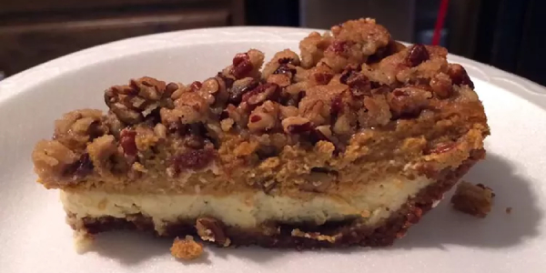

Old Fashioned Paradise Pumpkin Pie

Description
This triple-decker pie has a cheesecake layer on the bottom, pumpkin
custard in the middle, and a pecan streusel layer on top. Paradise!
Ingredients
- 1 (9 inch) pie shell
- 1 (8 ounce) package cream cheese, softened
- ¼ cup white sugar
- ½ teaspoon vanilla extract
- 1 egg, beaten
- 1 ¼ cups pumpkin puree
- 1 cup evaporated milk
- 2 eggs, beaten
- ¼ cup packed brown sugar
- ¼ cup white sugar
- 1 teaspoon ground cinnamon
- ¼ teaspoon ground nutmeg
- ¼ teaspoon salt
- 2 tablespoons all-purpose flour
- 2 tablespoons brown sugar
- 2 tablespoons butter, softened
- ½ cup chopped pecans
Steps
- Preheat oven to 350 degrees F (175 degrees C).
-
To Make Cheesecake Layer: In a medium mixing bowl, beat cream cheese
until smooth. Beat in 1/4 cup sugar, then add vanilla extract and 1 egg.
Beat mixture until light and smooth. Chill mixture for 30 minutes, then
spread into pastry shell.
-
To Make Pumpkin Layer: In a large bowl, combine pumpkin puree,
evaporated milk, 2 eggs, 1/4 cup brown sugar, 1/4 cup white sugar,
cinnamon, nutmeg, and salt. Mix until all ingredients are thoroughly
combined.
-
Pour pumpkin mixture over cream cheese layer. Cover edges of crust with
aluminum foil.
-
Bake in preheated oven for 25 minutes. Remove foil from edges and bake
an additional 25 minutes.
-
To Make Pecan Streusel Layer: While pie is in oven, combine flour and 2
tablespoons brown sugar in a small bowl. Mix well, then add softened
butter or margarine and stir until ingredients are combined. Mix in
pecans.
-
After pie has been in oven for 50 minutes, remove and sprinkle pecan
streusel evenly over top. Bake for an additional 10 to 15 minutes, until
a toothpick inserted in center comes out clean.